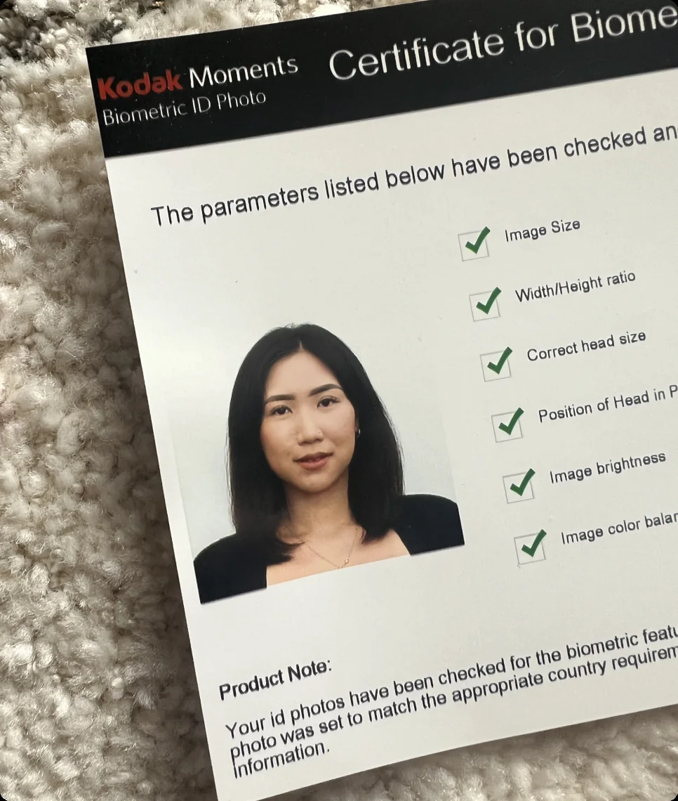
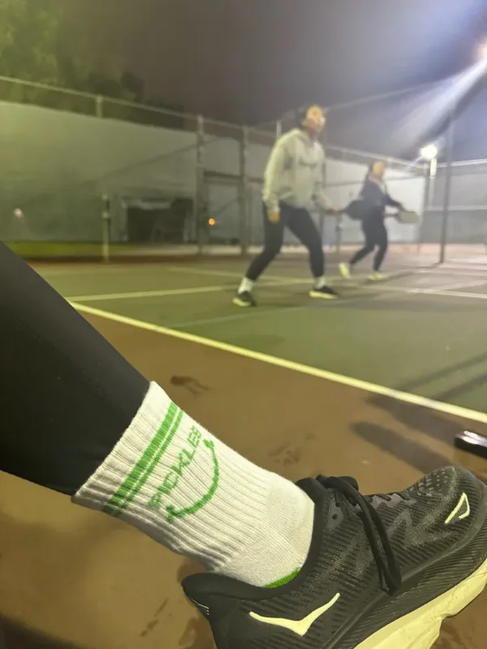
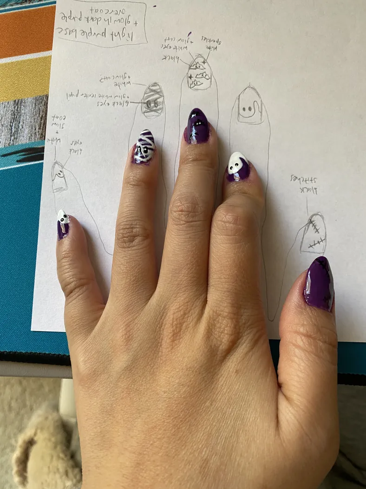
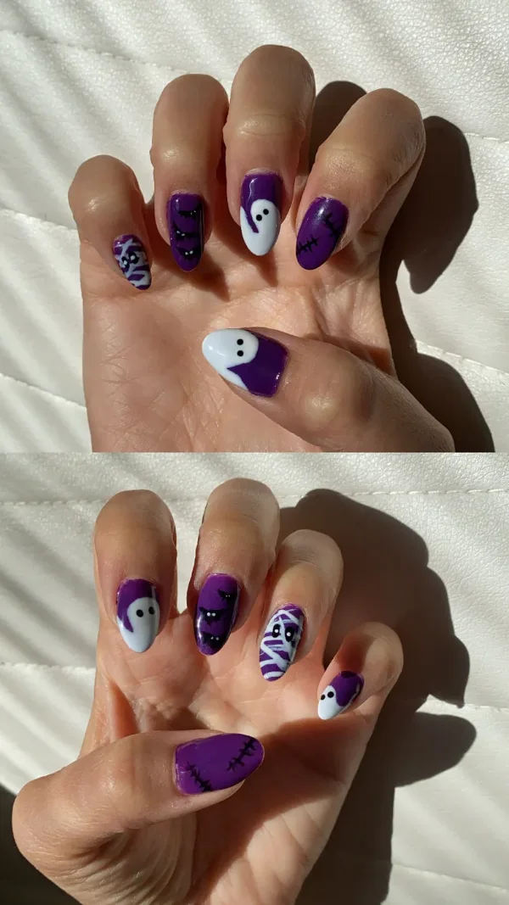
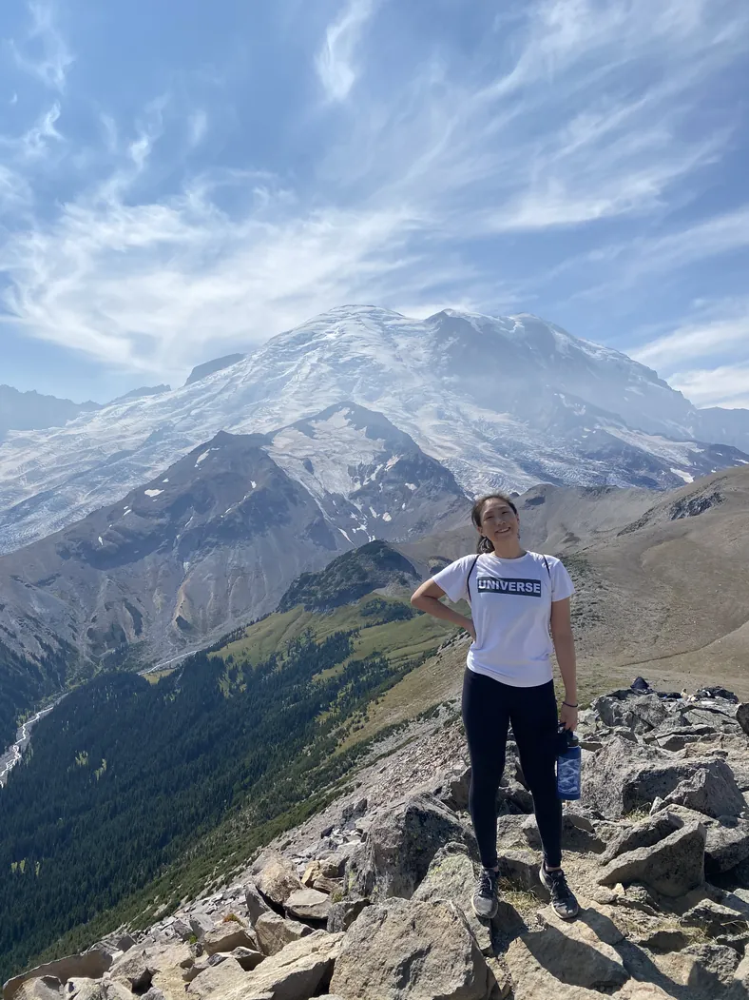
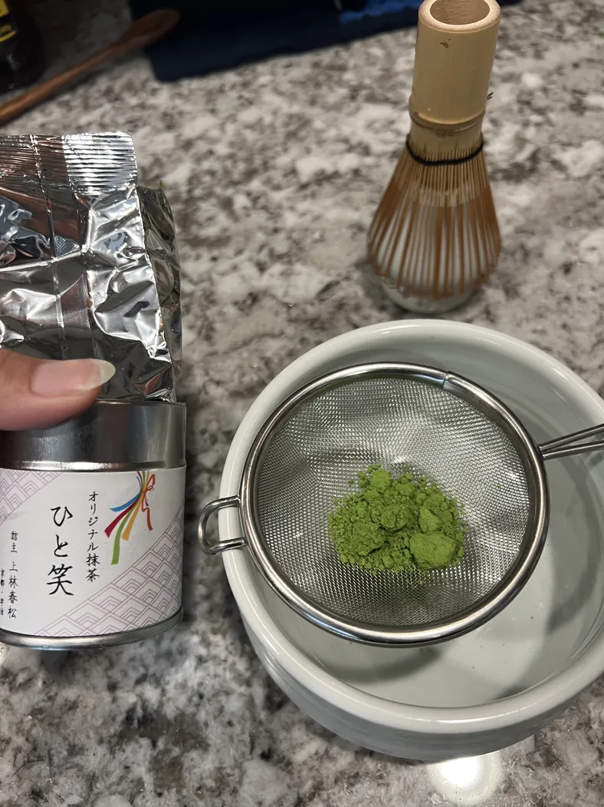
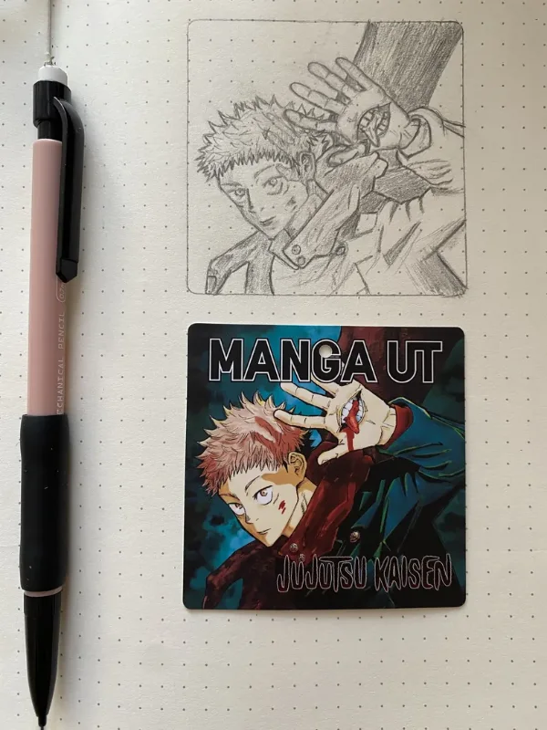
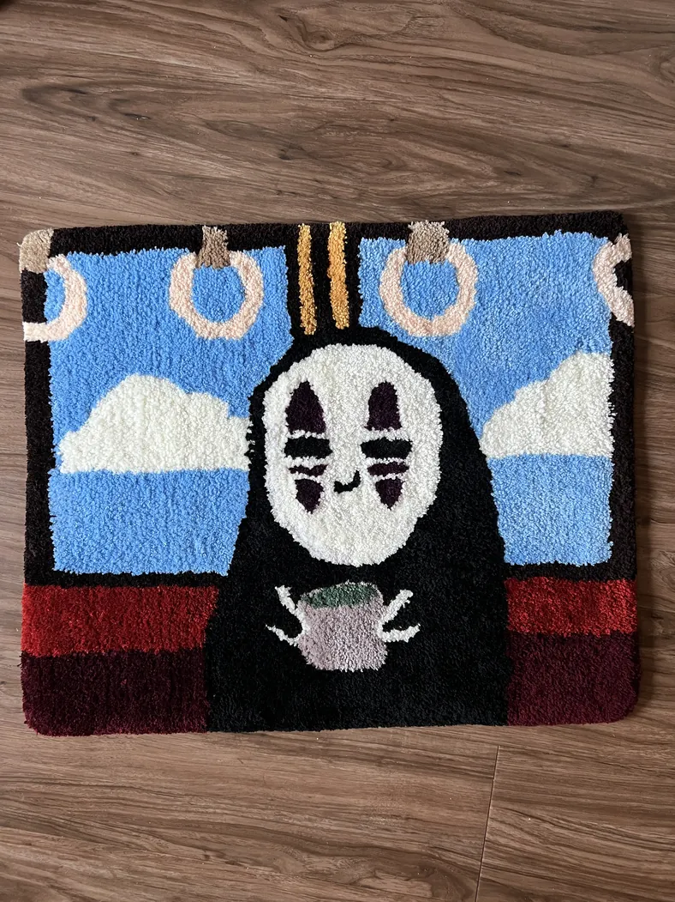
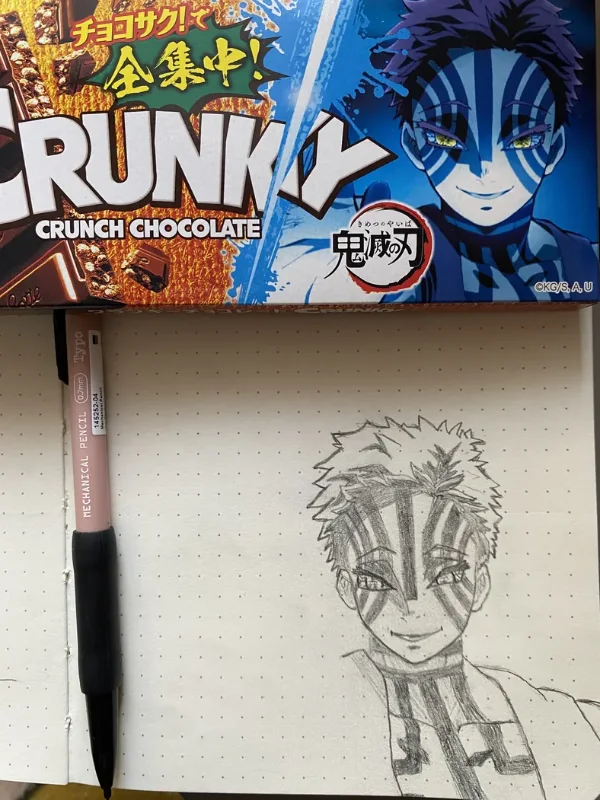

はじめまして〜
Nice to meet you!
Hi, I’m Jen~ I design tools people rely on to get work done. My goal is to make the hard things feel as easy as grabbing an onigiri from the konbini at 2am.
My dad taught me the Platinum Rule early on: treat people the way they want to be treated. It’s still how I design. I ask a lot of questions, sweat the small details, and aim for experiences so intuitive they feel invisible.
I’m happiest when I’m learning something new... whether that’s a new problem space, a new dance class, or a new hobby!









Thanks for stopping by :)
またお越しくださいませ~